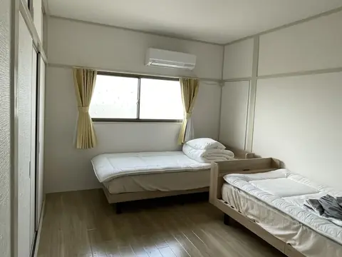
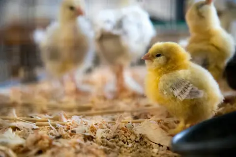
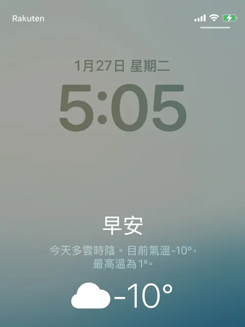
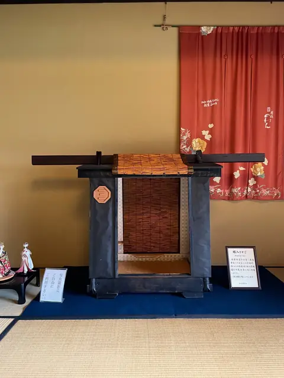
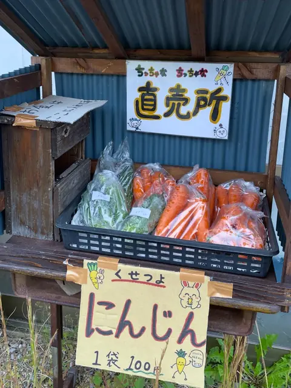
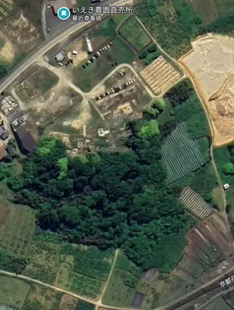
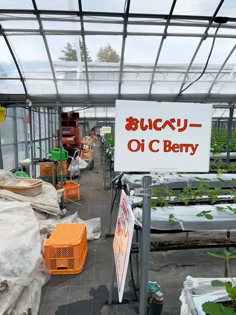
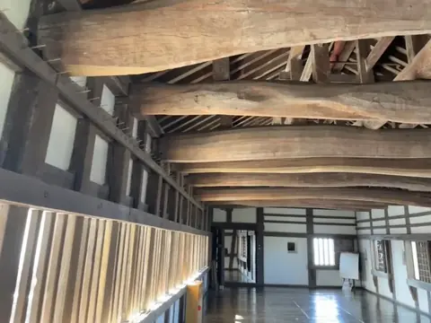
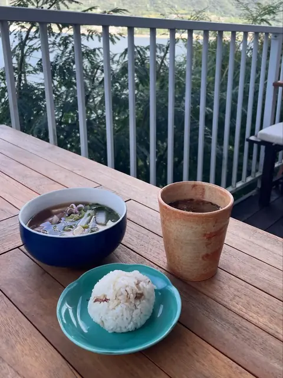

2026
日本でワーキングホリデーの1年：出発前の準備、お金のこと、あまり働かない暮らし方
2025年から2026年にかけて、日本でワーキングホリデーをしました。出発前の準備、実際の出費、日本語力、荷造り、保険のことをまとめています。それに、私の時間の大半は、アルバイトではなくワークエクスチェンジ（労働と引き換えの宿泊）でした。…

鶏舎のこと｜経済動物じゃなくてよかった
日がたつにつれて体格の差が開くと、ついていけない子は水やエサから押しのけられて、差がさらに広がっていきます。

スキー場のホテルでバイト：長野・菅平高原の雪国生活
ワーホリでのたったひとつの願いは「雪のある場所で冬を過ごすこと」でした。それで2025年12月から2026年3月まで、菅平高原のホテルで働きました。朝食・客室清掃・夕食のシフト、氷点下10度の日常、そして3か月半を一緒に過ごした台湾人の仲…

2025
ワークエクスチェンジの寄り道：日本人といっしょに料理して、日本人に食べてもらう
「まちまち案内所」のスタッフで、本業は豆腐づくりの紫保さんに、月に一度のランチ食堂の準備を手伝ってほしいと誘われて、日本の人たちに魯肉飯、麻油鶏スープ、豆花を作りました。
京丹後の日帰り旅：久美浜・網野・峰山
久美浜の豪商の邸宅と如意寺、網野のナポリピッツァと鳴き砂の琴引浜、海辺の足湯、そして峰山のコミュニティカフェと日本で唯一の「狛猫」。

京丹後の地元の野菜・果物、そして解禁された松葉ガニ！
自転車で無人の農産物直売所を探して、サツマイモ、梨、生のピーナッツ、特大のシイタケに出会いました。牧場の Sora にはアイスを食べに2回行って、もちろん見逃せない松葉ガニも！

ワークエクスチェンジ：京丹後・久美浜湾のカキの漁村
3回目のワークエクスチェンジは、京都の最北端、日本海に面した久美浜湾のカキ農家でした。3週間滞在して、なじみのない海の仕事にふれました。

ワークエクスチェンジ：姫路近郊のいちご農園、10月はいちごがない
2回目のワークエクスチェンジは、姫路のいちご狩り農園で1か月。早起き、ひとり時間のようなビニールハウスの仕事、そして、とてもよくしてくれたホストと農園のご家族のことを書きました。

10月の姫路：けんか祭り、お月見、旬の農産物
10月の姫路には何がある？ 定番の国宝・姫路城と、千年の古刹・書写山圓教寺のほかに、迫力満点の灘のけんか祭り、中秋の観月会、全国陶器市などの季節限定イベントも。観光のほかに、瀬戸内海の旬の魚介、大豊作のブドウ、道ばたでもぎった柿など、旬の…

芸術祭のない瀬戸内海の小豆島
次のワークエクスチェンジ先の姫路に向かう前に、小豆島に寄り道しました。姫路港から3時間のフェリー、居心地のいい民宿、醤油工場と酒蔵。行ってみて初めて、芸術祭の期間じゃなかったことに気づきました。

該当する記事がありません。キーワードを変えるか、絞り込みを解除してみてください。